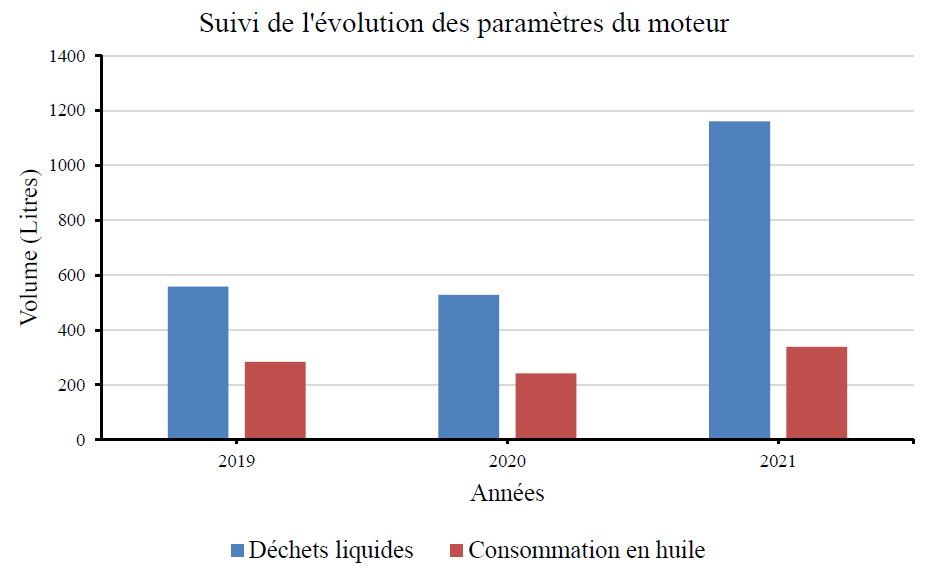
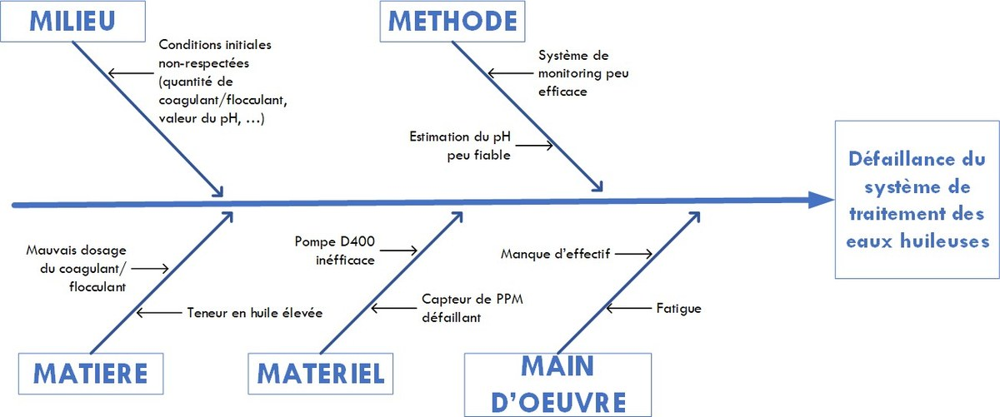

Environnement · Analyse de données · Mémoire d'ingénieur
Kribi : réduire les rejets d'eaux huileuses d'une centrale à gaz
Comment 200 maintenances sur 250 ont conduit à un diagnostic chiffré, puis à un système de détection des fuites
Le problème
La centrale de Kribi produit 216 MW à partir de treize moteurs Wartsila 50DF fonctionnant en bicarburation. Ces moteurs génèrent des eaux huileuses, un mélange d'eau et d'huile de lubrification qui doit être traité avant tout rejet dans l'environnement.
Trois signaux montaient ensemble sans que personne ait établi le lien entre eux : le volume d'eaux huileuses évacué par le prestataire, le nombre de pannes de l'unité de traitement, et la consommation d'huile de lubrification. La question posée était de réduire la production de ces effluents. La première chose à faire était de comprendre d'où ils venaient.
L'ampleur, en chiffres
En 2021, 200 des 250 maintenances réalisées en salle machine étaient dues à des fuites d'huile. Soit 80 % de l'activité de maintenance consacrée à un seul type de défaillance.
Volume d'eaux huileuses évacué, en litres
- 20181 005 000
- 2019532 500
- 2020659 000
- 20211 316 000, un doublement en deux ans
- Janvier à avril 2022262 000
Maintenances dues aux fuites d'huile en salle machine
- 2019, novembre et décembre11 sur 30, soit 37 %
- 2020112 sur 150, soit 75 %
- 2021200 sur 250, soit 80 %
Pannes de l'unité de traitement SENITEC
Une panne en 2019, trois en 2020, sept en 2021, sept sur les seuls premiers mois de 2022. L'installation censée traiter le problème devenait elle-même un point de défaillance.
La méthode
1. Établir les corrélations
Plutôt que de traiter les trois signaux séparément, j'ai cherché à savoir s'ils bougeaient ensemble. Deux corrélations calculées sur les données 2019 à 2021 :
- 0,92Entre la quantité de déchets liquides produits par les treize moteurs et la consommation d'huile de lubrification.
- 0,98Entre la quantité de boues récupérées et le nombre de maintenances sur l'unité de traitement.

Ces deux chiffres transforment une intuition en fait établi : la centrale ne perdait pas seulement de l'huile, elle payait cette perte trois fois, en achat d'huile, en maintenance moteur et en maintenance de l'unité de traitement.
2. Cibler avec un diagramme de Pareto
Une fois le lien établi, restait à savoir où l'huile s'échappait. Le principe de Pareto appliqué au relevé des interventions par équipement a fait ressortir un petit nombre de coupables :
20 % des équipements concentrent 80 % des fuites : cache-culbuteurs, pipelines, vannes, portes de visite, pompes et arbres à cames.
C'est ce qui rend une action possible. Surveiller treize moteurs entiers n'est pas réalisable ; surveiller six familles de points de fuite l'est.
3. Remonter aux causes avec un diagramme d'Ishikawa
Appliqué cette fois à l'unité de traitement SENITEC, pour comprendre pourquoi elle tombait en panne de plus en plus souvent au lieu d'absorber la charge.

Ce que j'ai proposé
Un système de détection et de localisation des fuites d'huile par kit ultraviolet, concentré sur les six familles d'équipements identifiées par le Pareto. La logique est simple : détecter une fuite au moment où elle apparaît plutôt qu'au moment où elle a rempli une cuve, et ne surveiller que ce qui casse réellement.
Ce que ce travail m'a appris, et que j'utilise encore
C'est ici que j'ai mené moi-même, pour la première fois, un Pareto et un Ishikawa de bout en bout, sur des données réelles d'exploitation. Et c'est mon seul travail entièrement centré sur le volet environnemental, celui du rejet industriel.
La séquence que j'y ai apprise est celle que j'applique depuis : mesurer avant d'agir, chercher si les signaux bougent ensemble, cibler la minorité d'équipements responsable de la majorité des défaillances, puis proposer une solution proportionnée à ce que le diagnostic a montré. C'est la démarche que j'applique à tout problème récurrent, sur une ligne de production comme dans une équipe.